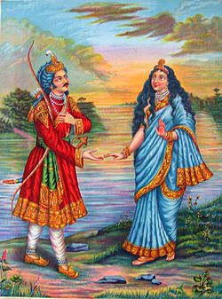
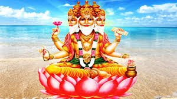
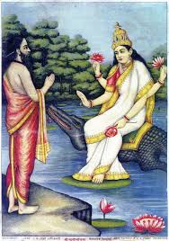
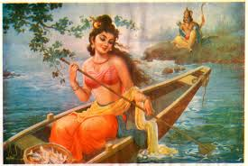

The king from which the from which the mahabharata starts

Shantanu was a king of Hastinapura in the epic Mahabharata. King Shantanu was the next to next generation of maharaja bharata of the Lunar dynasty and the great-grandfather of the Pandavas and Kauravas. Shantanu was the youngest son of King Pratipa of Hastinapura and had been born in the old age of him. The eldest son Devapi had leprosya (leprosy meaning:contagious disease that affects the skin, mucous membranes, and nerves, causing discoloration and lumps on the skin and, in severe cases, disfigurement and deformities. Leprosy is now mainly confined to tropical Africa and Asia) and gave up his inheritance to become the next king of hastinapur. The second son Bahlika (or Vahlika) abandoned his paternal kingdom and started living with his maternal uncle in Balkh and inherited his kingdom.So, Shantanu was made the king of Hastinapura kingdom.
Lord Brahma's curse and birth of Shantanu

In Shantanu's previous birth, there was a powerful king of the Ikshvaku dynasty named Mahabhisha(shree rama's descendent[waunshaj]). He possessed many virtuous qualities, and after performing a thousand Ashvamedha Yagnas and a hundred Rajasuya Yagnas (to become a samrat), he had attained heaven(swarg) after his death. Once he got an opportunity to visit the court of parm pita Brahma where all the Devas and Ganga were also present. While the celestials were worshipping parm pita Brahma, a wind blew and displaced Ganga's clothes revealing her body. Everybody present there bashfully bent their heads except Mahabhisha who kept gazing lustfully at her. Upon seeing this act,parm pita Brahma lost his temper and cursed him to be born as mortal. Ganga who also relished the mortal act was cursed to be born as human and come back only after breaking Mahabhisha's heart. Mahabhisha then requested Brahma that he, Mahabhisha, be born as the son of hastinapur king Pratipa.parm pita brhama accepted his wish and left him.
The hastinapur king Pratipa was once meditating. At that time Ganga took the form of a beautiful woman, approached the king and sat on his right thigh. When he asked her what she wanted, Ganga requested him to become her husband. Pratipa however refused since he had taken a vow not to lust for anybody, and also that she had sat on his right thigh and according to traditions a man's right thigh was for his daughter or daughter-in-law while the left thigh was for his wife. He then proposed that she marry his son, to which she agreed.In their old age a child was born to Pratipa and his wife,named Sunanda . He was named Shantanu because when he was born his father had controlled his passions by ascetic penances. Pratipa then accepted Shantanu as king of Hastinapura and retired into the woods to perform penances(Penance meaning: self-punishment done to try to right a wrong, or the receipt of absolution from sins from a priest by fulfilling some requirement.). Bahlika who was elder than Shantanu also gave permission to him for becoming the king of Hastinapur.
Shantanu met Ganga

Shantanu saw a beautiful woman on the banks of the river GANGA and asked her to marry him. She agreed but with one condition she said: that Shantanu would not ask any questions about her any actions. They married and she later gave birth to a son. But she drowned the child. Shantanu could not ask her the reason, because of his promise, lest she would leave him. One by one, seven sons were born to them and were throwed by Ganga in the river. When Ganga was about to drown the eighth son, Shantanu, devastated, could not restrain himself and confronted her. Finally, Ganga explained to King Shantanu about Brahma's curse given to Mahabhisha and her. Then she told him that their eight children were Eight Vasus who were cursed by Vasishtha to be born on earth as mortal humans. However when they pacified him, he limited his curse and told them that they would be freed from this curse within a year of their birth as humans. So she released the seven of them from this life by drowning them all. However the Vasu Dyaus was cursed to live a long life and to never have a wife or have children. But the sage also gave a boon to him that he would be virtuous, conversant with all the holy scriptures and will be an obedient son to his father. Ganga said she would take him to the heavens to train him properly for the King's throne and status. With these words she disappeared along with the child while Shantanu was struck with grief thinking about spending the rest of his life without her.
Shantanu meets with his eighth son of Ganga
.jpg)
Shantanu, filled with grief from the loss of his wife and son, and trying to forget them he began to live like a Brahmachari and ruled his kingdom extremely well. By merely adopting virtuous behaviour, Shantanu was easily able to conquer the entire world without lifting weapons. All the kings declared Shantanu as samrat and his kingdom was a peaceful one. Shantanu gave up hunting and gained popularity from his subjects.
One day, while walking along the banks of the Ganga, Shantanu saw that the river had become shallow. While searching for the cause of this phenomenon, he came across a handsome young boy who had checked the river's flow with his godly weapons. The young boy was his son (devarata), however he didn't recognize him because he could see him only for a few moments after he was born. The boy recognized that he was his father, however he didn't reveal it to him instead he disappeared from his sight using his power of illusion. Shantanu upon seeing this, wondered whether the boy was actually his son and called upon Ganga to show the boy to him. Ganga having thus appeared, revealed to him that the boy was actually his son Devavrata and that he was taught the knowledge of the holy scriptures by the sage Vasishtha and the art of warfare by cheeranjeevi Parshurama. After revealing the truth about Devavrata she told Shantanu to take him to Hastinapura. Upon reaching the capital Shantanu crowned Devavrata as the heir-apparent to the throne.
Although Shantanu was pained from his separation from Ganga, he was overjoyed upon receiving such an accomplished son. He performed seven Ashwamedha Yagnas on the banks of Yamuna with the help of Devavrata.
Shantanu met Satywati

Four years later, Shantanu while traveling near the banks of Yamuna smelled a sweet scent coming from an unknown direction. While searching for the smell of the scent, he came across Satyavati from whom the smell of scent was coming. Satyavati was the adopted daughter of the chief of the fishermen of her village. Upon seeing her, Shantanu fell in love with her and asked her to marry him. Upon asking for his consent, her father agreed to the marriage on a condition that Satyavati's first son would be the next king of hastinapur.
King Shantanu was unable to give his word on accession as his eldest son Devavrata was the heir to the throne. Devavrata, however, came to know the cause of his morosity and for the sake of his father from the 'CHARIOTEER' ,that he coudn't gave his word to the chief that he would renounce all his claims to the throne, in favor of Satyavati's children. To reassure the skeptical chief further, he also vowed lifelong celibacy to ensure that future generations borne of Satyavati would also not be challenged by his offspring. Upon hearing this vow he immediately agreed to the marriage of Satyavati and Shantanu. Devavrata was named as Bhishma (one who has taken a terrible vow) by the celestials because of the terrible oath he took. Upon returning with Satyavati to Hastinapura he told about his vow to his father. Upon hearing about this Shantanu became highly impressed and gave him a blessing that he will only die if he chooses so (Ichhamrityu). Shantanu and Satyavati went on to have two sons, chitrangata and Vichitravirya. After Shantanu's death, Vichitravirya became the king of Hastinapura because Chitrangada was killed by a gandharva of the same name when Shantanu was still alive.